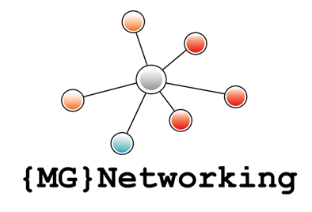

MG – NetworkingDer Schutz Ihrer persönlichen Daten ist mir wichtig. Diese Website verarbeitet keine personenbezogenen Daten automatisiert und setzt keine Cookies, Tracking‑Tools oder Analyse‑Dienste ein.
Michael Gärtner
MG – Networking
Wendlingen am Neckar
Deutschland
E-Mail: michael.gaertner[at]mg-networking.com
Beim Aufruf dieser Website werden automatisch technische Informationen erfasst (z. B. Browsertyp, Uhrzeit des Zugriffs). Diese Daten werden vom Hosting‑Provider gespeichert und dienen ausschließlich der technischen Bereitstellung der Website. Eine Zusammenführung mit anderen Daten findet nicht statt.
Wenn Sie mich per E-Mail kontaktieren, werden die von Ihnen übermittelten Daten ausschließlich zur Bearbeitung Ihrer Anfrage verwendet.
Diese Website verwendet keine Cookies, keine Analyse‑Tools und keine externen Tracking‑Dienste.
Sie haben das Recht auf Auskunft, Berichtigung, Löschung, Einschränkung der Verarbeitung sowie Widerspruch gemäß DSGVO. Kontaktieren Sie mich hierzu gerne.